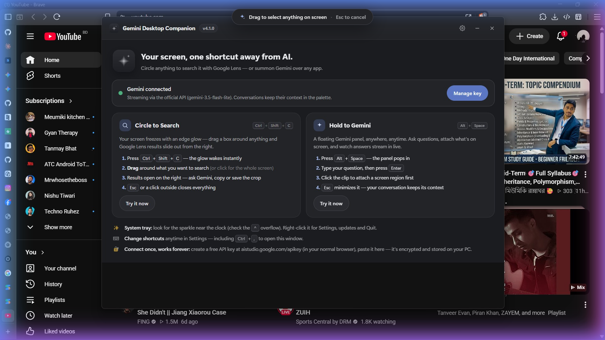
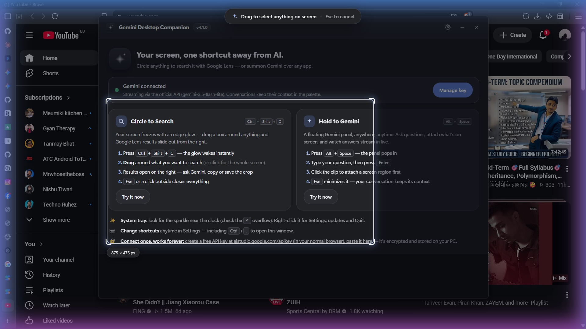
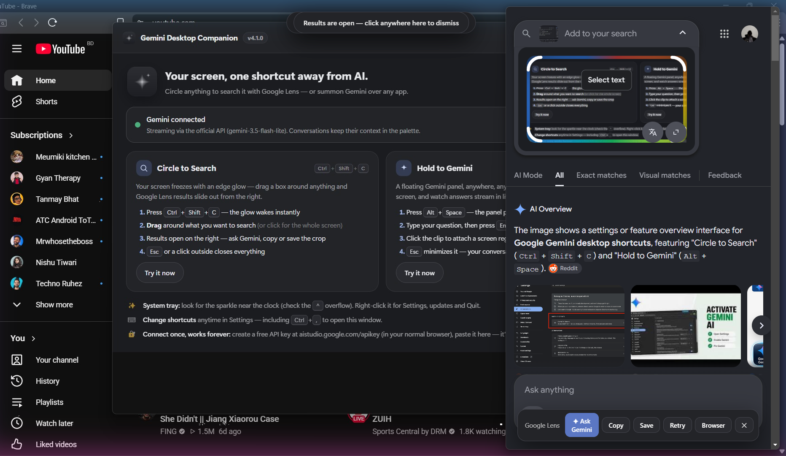
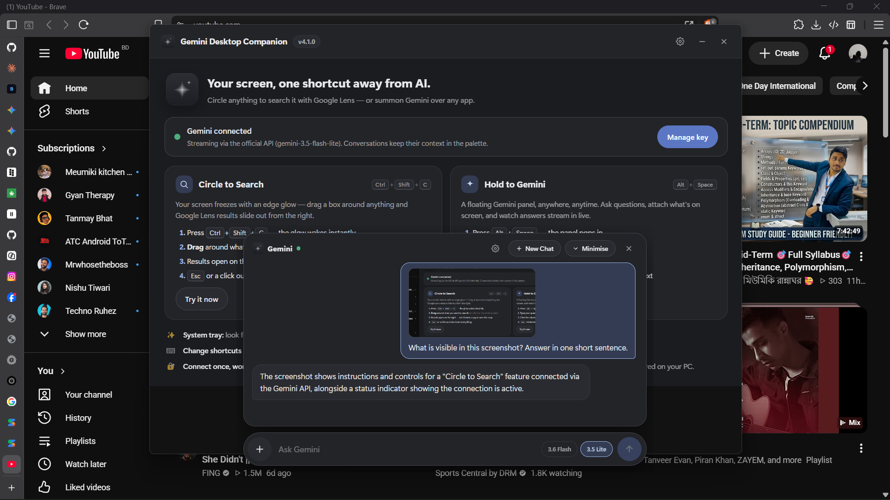
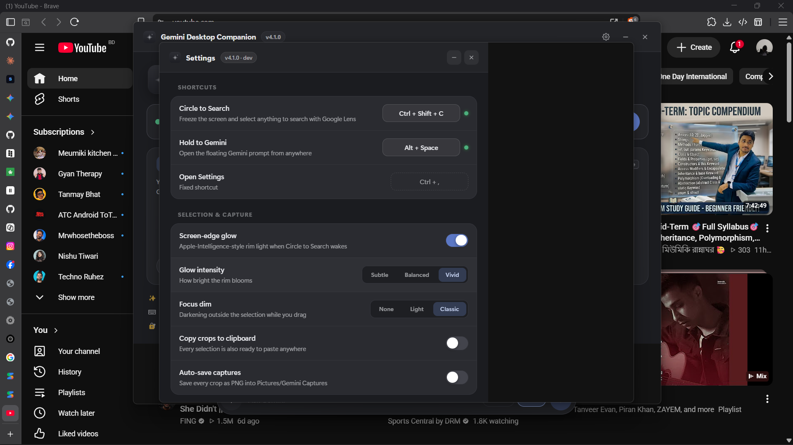
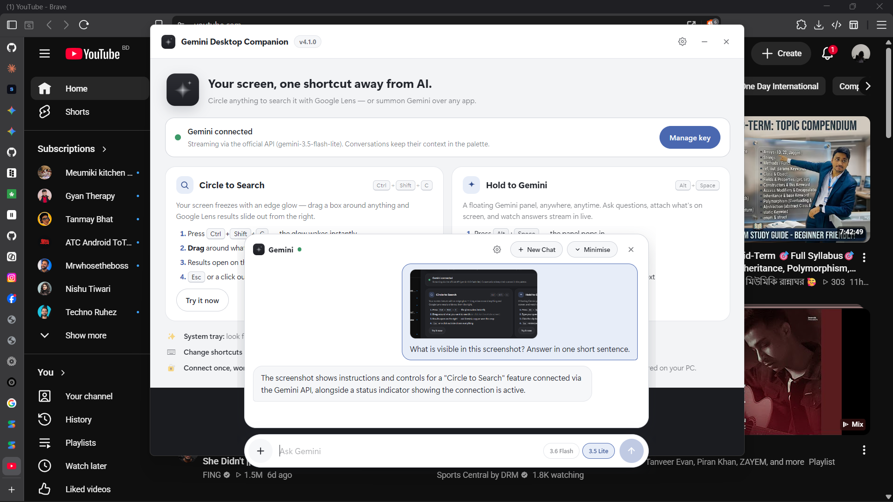

Android's favorite AI features, finally on your PC. Circle anything on screen for instant Google Lens results — or press one hotkey and hold a conversation with Gemini about what you're looking at. Plus Hold to Gemini, a floating AI pill over every app.
Windows 10 / 11 (64-bit) · Circle to Search works instantly — no account, no API key
Google Lens built in Official Gemini API No telemetry MIT licensed
Circle to Search — any app, any monitor

Google Lensresults in a slide-out panel
Gemini pillstreaming answers, live
~200 mshotkey → overlay
100%clean captures
2global hotkeys
0telemetry / ads
Two features, one hotkey away
Your screen, searchable and explainable
Everything Android users love about Circle to Search and Hold to Gemini — rebuilt natively for the Windows desktop.
Ctrl+Shift+C
🎯 Circle to Search for PC
Freeze every monitor with an edge glow, drag a pixel-exact box around anything — text, a product, a plant, an error message — and Google Lens results slide in from the right.

No API key needed — works the second you install it
HiDPI & multi-monitor aware, lossless crops
Lens toolbar: Ask Gemini · Copy · Save · Open in browser
Alt+Space
✨ Hold to Gemini
An Android-style floating Gemini pill appears over any app. Ask questions, attach what's on screen with ＋, and watch answers stream in — powered by the official Google Gemini API.
Switch models in-pill · free API key connects in 30 s
Built like a native app
Polished down to the last pixel
Not a browser wrapper hack — a fast, quiet tray app with real Windows integration.
Instant wake
Pre-warmed windows + a fast GDI capture path. Hotkey to overlay in ~200 ms — no black screens, no multi-second waits.
Pixel-clean captures
Crops are cut in the main process from the lossless original — the delivered image never contains the overlay, glow or dim.
Lens action toolbar
Ask Gemini, Copy, Save, Retry, Open in browser, Close — one click from any search result.
Quick actions
Explain · Summarize · Translate · Solve · Write code — one tap on an empty chat or right after attaching a capture.
In-pill model switcher
Toggle gemini-3.6-flash and gemini-3.5-flash-lite right inside the pill. Stop mid-stream and keep the partial answer.
Two pro themes
Graphite dark and soft white light. Solid, bold surfaces designed for long sessions — switch anytime in Settings.
Custom hotkeys
Re-record both shortcuts in Settings with conflict detection. Defaults: Ctrl+Shift+C and Alt+Space.
Quiet tray daemon
Lives in the system tray, optional launch at startup. Your API key is encrypted with Windows DPAPI — never leaves your PC.
Setup in under a minute
Three steps to AI on your desktop
Download & install
Grab the free ~78 MB installer from GitHub Releases and run it. No account needed. Circle to Search works immediately with Ctrl+Shift+C.
Connect Gemini (optional)
In Settings → Gemini API, click Get API key — Google AI Studio opens, you create a free key, paste it back. Encrypted locally with Windows DPAPI. Takes ~30 seconds.
Press & go
Alt+Space summons the Gemini pill over any app. Attach your screen with ＋, ask anything, and watch the answer stream in live.
See it in action
Every surface, designed with intent
Real screenshots from v4.1.0 — captured over a browser so you see exactly what you get.

Google Lens results — slide-out panel with Ask Gemini, Copy, Save and Retry

Gemini chat — streaming answers with your screen attached as context

Settings — hotkeys, glow intensity, focus dim, auto-save, API key

Light theme — soft white surfaces for bright rooms
Muscle memory friendly
Two hotkeys. That's the whole UI.
ActionDefault shortcutCustomizable
🎯 Circle to SearchCtrl + Shift + C✓ Settings → Shortcuts
✨ Hold to GeminiAlt + Space✓ Settings → Shortcuts
⚙️ Open SettingsCtrl + ,fixed
Questions, answered
Frequently asked questions
Is there a Circle to Search app for Windows?
Yes — this one. Gemini Desktop Companion is a free, open-source Windows app that recreates Android's Circle to Search. Press Ctrl+Shift+C, drag a box around anything on any monitor, and Google Lens results slide in from the right. Works on Windows 10 and 11 with no API key or account.
How do I get Circle to Search on Windows 10 or 11?
Download the free installer from GitHub Releases, run it, and press Ctrl+Shift+C. The screen freezes with an edge glow; drag around text, images, products or error messages to search them with Google Lens. The whole setup takes under a minute.
Is Gemini available as a desktop assistant for Windows?
Yes — Hold to Gemini gives you a system-wide Gemini assistant on Windows. Press Alt+Space anywhere and an Android-style floating Gemini pill appears. Chat, attach any screen region with the ＋ button, and get streaming answers powered by the official Google Gemini API.
Is Gemini Desktop Companion free?
Completely free and MIT-licensed open source. Circle to Search needs no key at all. Gemini chat uses your own free Google AI Studio API key (free tier included); a paid-tier key works with the same paste-a-key flow for heavy use.
Is it private and safe to use?
No telemetry and no backend server. Screenshots go only to Google (Lens / Gemini API) unless you enable local clipboard or auto-save. Your API key is encrypted with Windows DPAPI and stored locally. The full source code is public on GitHub.
How is it different from the Snipping Tool or PowerToys?
Those tools capture pixels; this app understands them. A selection instantly becomes Google Lens results or a Gemini conversation — explain, summarize, translate, solve or write code from anything on screen, with ~200 ms wake and captures that never include the overlay.
Ready to circle anything?
Free forever. Open source. Installs in seconds — and your first Google Lens search is one hotkey away.